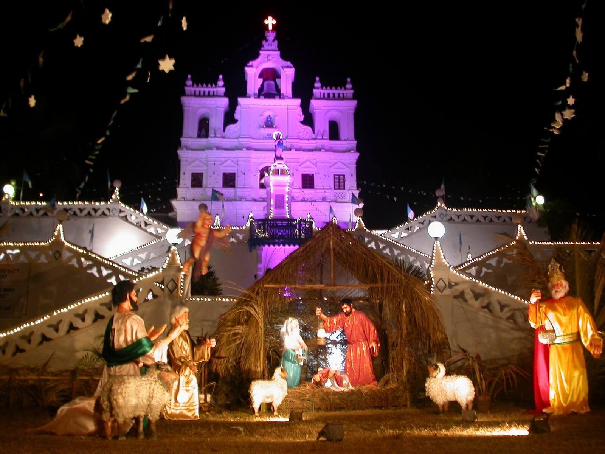
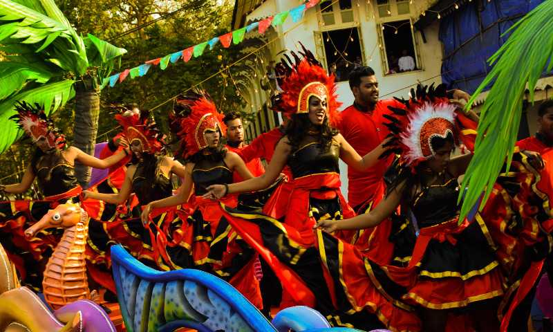
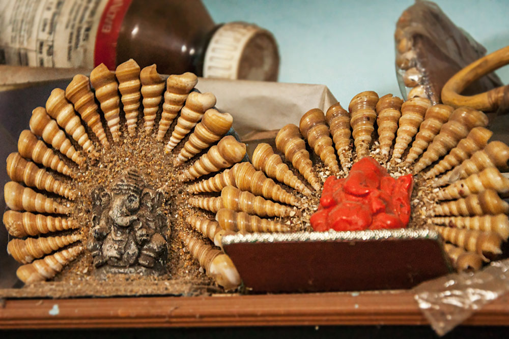
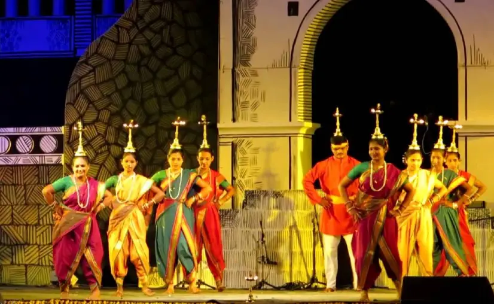
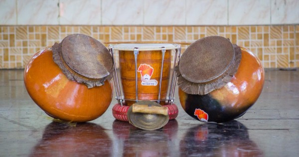
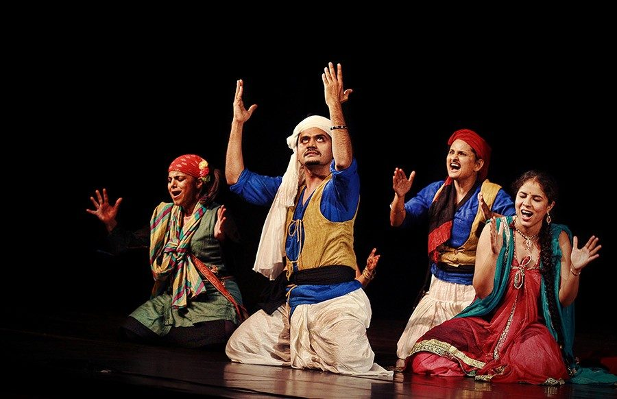

CULTURE:
Having been a Portuguese territory for over 450 years, Goan culture is an amalgamation of both Eastern and Western styles. Prominent local festivals are Christmas, Easter, Carnival, Diwali, Shigmo, Chavoth, Samvatsar Padvo, Dasara etc. The Goan Carnival and Christmas-new year celebrations attract many tourists.
Goa is famous for its Indo-Latin festivals, carnivals, and fiesta.Apart of other typical festivals Goa also celebrates occasion for music, dance, and other cultural elements.
HERE ARE TOP 5 FESTIVALS YOU SHOULD NOT MISS WHEN IN GOA:
1.Shantadurga - January festival related to Goddess Shantadurga. Festival is famous for the procession, five-day fair, and many cultural.
2.Christmas - Christmas is seem to be the the most polular festival in Goa.
3. Wine Festival – Since 2005, Panjim is celebrating the wine festival in January with grape stomping tradition, wine tasting and much more.
4.Shigmo – This is a regional Hindu festival celebrated for 15 days with colorful activities, cultural performances and so on.
5.Goa Carnival – This three-day carnival takes place in Panjim. You can find processions of live bands floats and much more. This is India’s Mardi gras.


HANDICRAFTS OF GOA :
The local handicrafts of Goa truly make for colourful souvenirs. You can find them wherever you go, peeking out from shop windows and calling out to you in noisy flea markets.
From intricate wood carving to colourful wooden lacquerware, from sturdy bamboo craft to delicate papier-mâché, from fabulous terracotta and brassware to art pieces made from exotic sea shells

DANCE AND MUSIC :
Goa has a long list of cultural music and dances. The people in urban areas have adopted modern music styles while the rural areas are still known for traditional and folk music forms.
Ghumat, Shamel, Violin, Cymbals, Shehnai and Surt are the major instruments that are used in almost all types of Goan music. Goa's folk dances display old traditions, cultures, lifestyles and objectives of various religions, castes and stratum of the Goan society. Mussoll is a popular folk-play-cum-dance form through which the tale of victory of King Harihara II of the Vijayanagar empire over the Cholas is narrated to the viewers.Kunbi and Morulem are two traditional dance patterns that are performed by the tribes mainly on the Shigmo festival. Kunbi is performed by the women, by holding lamps on their heads.


THEATER AND KONKANI INDUSTRY
"Jagor", the traditional folk dance-drama, is performed by the Hindu Kunbi and Christian Gauda community of Goa, to seek the Divine Grace for protection and prosperity of the crop. Literal meaning of Jagor is "jagran" or wakeful nights. The strong belief is that the night-long performance awakens the deities once a year and they continue to remain awake throughout the year guarding the village.
Konkani cinema is an Indian film industry, where films are made in the Konkani language, which is spoken mainly in the Indian states of Goa.
The first full-length Konkani film was Mogacho Anvddo, released on 24 April 1950, and was produced and directed by A. L.Jerry Braganza, a native of Mapusa, under the banner of ETICA Pictures. Hence, 24 April is celebrated as Konkani Film Day.
